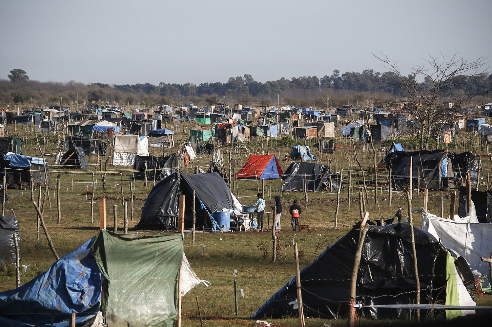
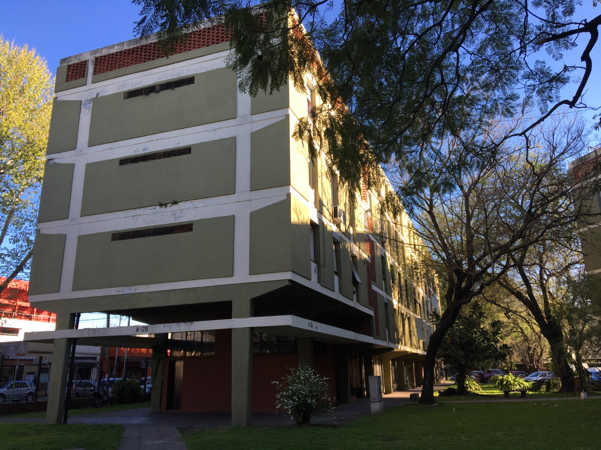
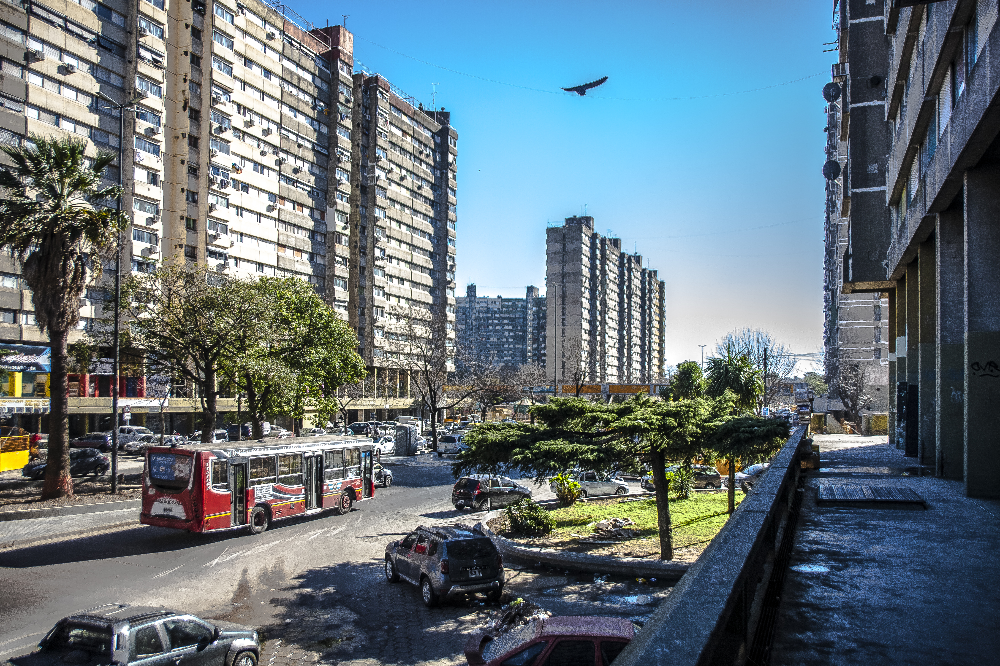
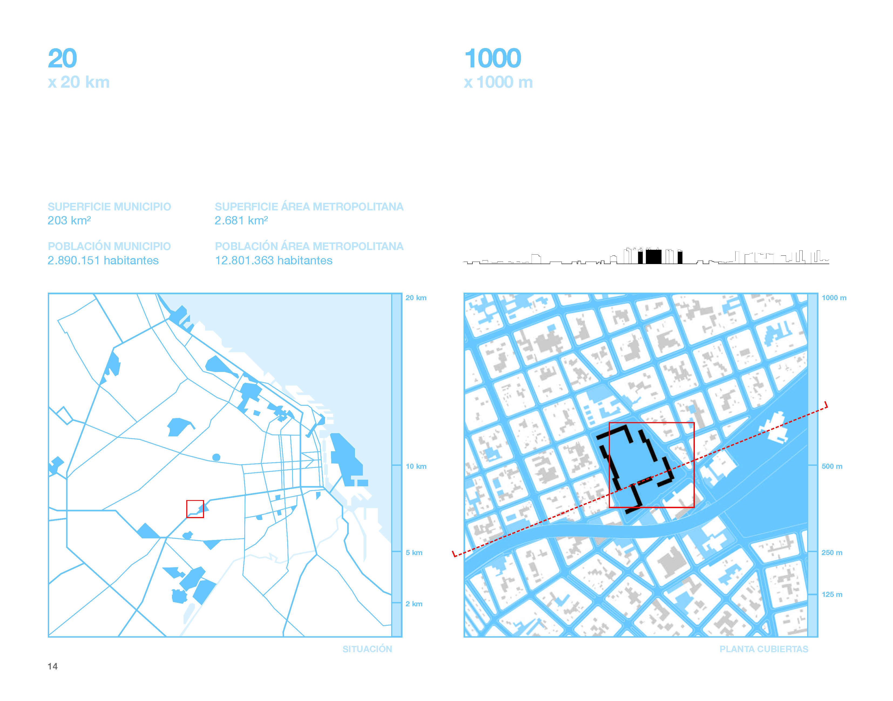
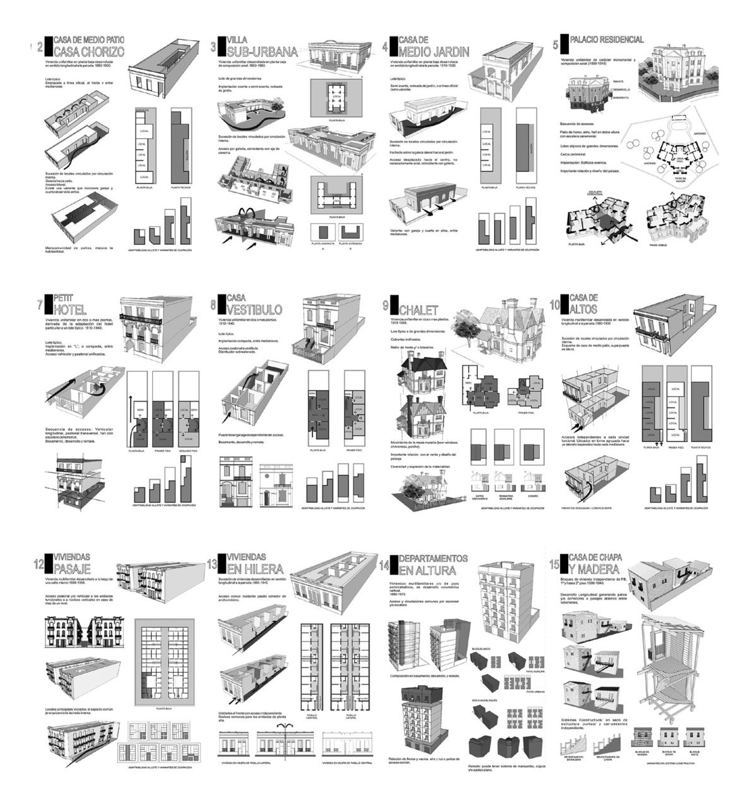
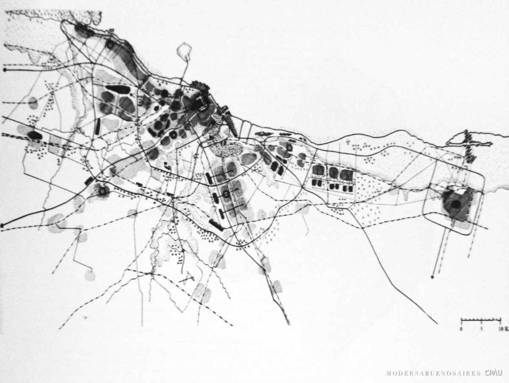

Fotografía de Leandro Teysseire, fuente página 12.




Centros Clandestinos de Detención
Cartografía del terrorismo de Estado en Argentina
Ver proyecto →Análisis y representación de datos cronológicos
Visualización de viajes en la red de subterráneo de Buenos Aires
Ver proyecto →Mapa interactivo de resultados electorales por escuela
Elecciones legislativas CABA 2025
Ver proyecto →Universidad de Buenos Aires - FADU
2025
Universidad de Buenos Aires - FADU
2024
Universidad de Buenos Aires - FADU
2016
Historia 4 – Cat. Petrina
Universidad Nacional de Avellaneda
2018 – Actualidad
Historia 1 – Cat. Petrina
Universidad Nacional de Avellaneda
2022 – Actualidad
Historia 1 – Cat. Martín Iglesias
Universidad de Buenos Aires
2011 – 2022
Ministerio de Infraestructura de la Pcia. de Buenos Aires
Dirección Provincial de Infraestructura Municipal
10/2024 – Actualidad
Ex Ministerio de Obras Públicas de la Nación
Dirección Nacional de Infraestructura del Transporte (actual Min. Economía)
2020 – 2024
Gobierno de la Ciudad de Buenos Aires
Dirección General de Interpretación Urbanística – Ger. Op. Supervisión de Patrimonio Urbano (APH)
2015 – 2020
Para conocer más detalles sobre mi trayectoria académica y profesional